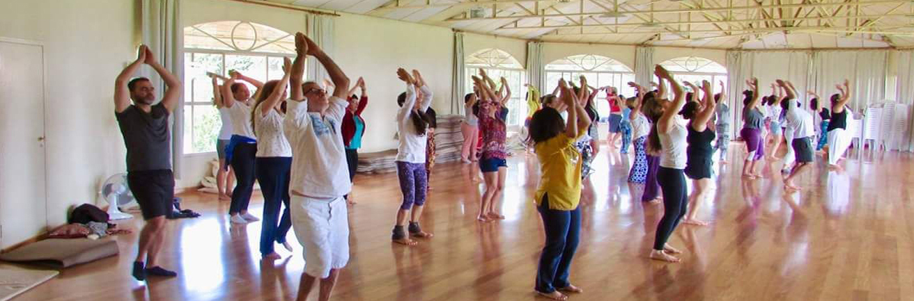

Shrii Prabhat Ranjan Sarkar, also known as Shrii Shrii A'nandamu'rtijii, is the father of Neo-humanist movement. He presented neo-humanism as an alternative paradigm in 1982 for the 'liberation of human intellect'.
Neo-humanism is the fundamental postulate that each and every object of this cosmos is bound together by mutual attraction. There is a mutual relationship between a large star, a planet, a satellite, a small meteor or even a stone. A natural balance is maintained in both the animate and inanimate worlds due to this mutual attraction. All existence is equally valuable, and therefore only those ideas, philosophies and theories which imbibe and express universal love for all of creation can foster the path of evolution. Not only fellow citizens or fellow humans deserve our concern, but each and every particle of creation demands equal love and respect.
Ours should be a proper adjustment, and for that adjustment there is no alternative but to follow the lofty and subtle principles of Neohumanism. This Neohumanism of ours, this Neohumanistic approach of ours, is the result of a never-ending effort through our rationalistic approach, our spiritual cult and our spiritual mission. That is, we apply this Neo-Humanistic ideology in the realm of the physical world, the physico-psychic world, and the psycho-physical world, with all the charms and glamours of our mind, and all the charms and glamours of our sweet human heart.
Shrii Shrii A'nandamu'rti jii